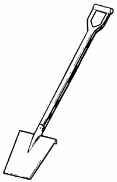
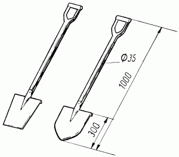
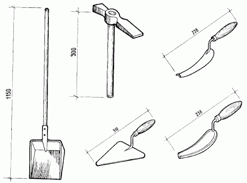
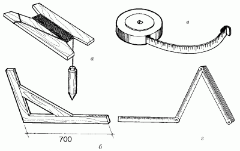
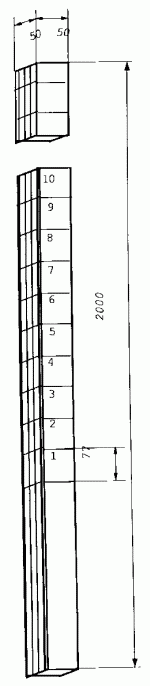

Инструменты для строительных работ.

Для строительства фундамента потребуются различные инструменты. Лучше всего их приобрести заранее, чтобы в процессе работы не пришлось отвлекаться лишний раз.
Инструменты для работы с землейДля земляных работ потребуются следующие инструменты:
– кирка;
– лопата с прямой режущей частью;
– лопата остроконечная;
– заступ с прямой режущей частью;
– заступ с плоской нижней частью.
Кирка предназначена для разрыхления твердого грунта.
Лопата с прямой режущей частью служит для снятия легкого грунта и выравнивания поверхностей. Выбирают ее с учетом собственных сил. Рекомендуемый размер – 30 x 28 см.
Лопата остроконечная необходима для снятия твердого грунта (например, гравия). Она не подходит для выравнивания поверхностей.
Заступ с прямой режущей частью (рис. 1) нужен для снятия легкого грунта и выравнивания поверхностей.

Рис. 1. Заступ с прямой частью.
Заступ с остроконечной нижней частью (рис. 2) используют для перемешивания и «мягчения» различных растворов, применяемых в строительстве.

Рис. 2. Заступ с остроконечной нижней частью.
Инструменты для каменной кладки и бетонных работДля каменной кладки, а также для проведения бетонных работ следует приобрести следующие инструменты (рис. 3):

Рис. 3. Инструменты для каменной кладки.
– молоток;
– расшивка;
– кисть и щетка каменщика;
– клещи;
– кельма;
– растворный ящик;
– грабли;
– бетономешалка;
– бочка для воды, ведро, лейка;
– трамбовка;
– терки;
– зубила.
Молоток– универсальный инструмент, так как подходит для многих видов строительных работ. При выборе молотка обращают внимание на гвоздодерную прорезь, с помощью которой можно извлечь криво забитый гвоздь.
Расшивка служит для заглаживания швов каменной кладки на лицевой стороне стены (цоколь дома), для кладки дымовых труб, кладки из камня.
Клещи нужны для перекусывания стальной проволоки. Наиболее удобны клещи с длинными ручками (не менее 23 см).
Кельма, или мастерок, для работ с бетоном. Ее используют для оштукатуривания, заглаживания поверхностей (например, пола), каменной кладки.
Растворный ящик можно сделать самостоятельно. Для этого плотно сбивают доски гвоздями так, чтобы получился ящик. Под растворный ящик можно приспособить большое железное корыто или разрезанную пополам бочку.
Грабли понадобятся для перемешивания порошковой извести или цемента с гравием и песком.
Площадка для замеса растворов нужна для того, чтобы в ящик с раствором не попадали посторонние предметы. Делают ее из досок в форме прямоугольника или квадрата, по краям которого прибивают небольшие бортики.
Бетономешалка может быть с бензиновым или электрическим двигателем. С ее помощью готовят бетон и раствор.
Бочка для воды, ведро, лейка. Бочка позволит иметь постоянный запас воды, ведро послужит для доставки воды, необходимой для бетона и растворов, лейка – для увлажнения смесей.
Трамбовка – инструмент для уплотнения бетона.
Правило необходимо для равномерного распределения по поверхности набросанного на нее раствора извести. Рекомендуемый размер – 20 x 110 см.
Терки по своей форме напоминают правило. Рекомендуемые размеры терок – 12 x 25 см и 8 x 20 см.
Зубила пригодятся для проведения мелких работ, например выдалбливания различных отверстий.
Растворная лопата предназначена для подачи и расстилания раствора на стене. Лопатой также перемешивают раствор в ящике и разравнивают его между верстами под забутку.
Швабровка потребуется при очистке вентиляционных каналов от выступившего из швов раствора, а также для более полного заполнения швов раствором и заглаживания их. На стальной ручке швабровки внизу между фланцами закреплена резиновая пластина размером 140 х 140 х 10 мм, с помощью которой и осуществляется процесс зачистки и заглаживания.
Контрольно-измерительные приборыУровень-шланг применяется для определения точек, которые должны находиться на одном уровне, например при закладывании цоколей, фундаментов, настилании полов и т. д.
Этот вид уровня можно сделать самостоятельно из простого садового шланга.
Оба конца шланга загибают вверх на определенную высоту, затем вставляют в них закрывающиеся пробками прозрачные трубки. После этого шланг наполняют водой так, чтобы ее уровень в трубках находился на одной горизонтальной черте, одновременно убирают пробки и отмечают необходимые точки.

Рис. 4. Контрольно-измерительные приборы: а – отвес; б – угольник; в – рулетка; г – складной метр.
Метр складной (рис. 4 г) необходим для определения размеров небольших деталей. Для продления срока службы складного метра каждое его сочленение смазывают маслом.
Рейка мерная из дерева применяется при определении размеров больших деталей. Длина такой рейки должна быть не менее 3–5 м, ширина – 4 см, высота – 3 см. С помощью складного метра по всей длине рейки через каждые 5 см наносят деления.
Лента мерная используется в тех случаях, когда невозможно точно определить размеры детали с помощью складного метра или деревянной рейки.
Как правило, ленту изготавливают из стали или льняного полотна.
Угольник (рис. 4 б) применяют при работах с чертежами для прямоугольных разметок, при строительных работах для создания прямых углов и т. д.
С помощью отвеса выверяют вертикальность стен, простенков, столбов и углов кладки. Отвесами массой 200–400 г проверяют правильность кладки по ярусам и в пределах высоты этажа; отвесы массой 600–1000 г служат для проверки наружных углов здания в пределах высоты нескольких этажей.
Строительный уровень выпускается длиной 300, 500 и 700 мм. Служит для проверки горизонтальности и вертикальности кладки. На корпусе уровня закреплены две стеклянные трубки-ампулы, изогнутые по кривой большого радиуса, наполненные незамерзающей жидкостью так, что в них остается небольшой воздушный пузырек. Если уровень находится в горизонтальном положении, пузырек, поднимаясь, останавливается посередине между делениями ампулы. Смещение пузырька влево или вправо от этого положения показывает, что поверхность, на которую установлен уровень, не горизонтальна, и чем больше ее наклон к горизонту, тем больше смещается пузырек от среднего положения.
Благодаря тому что трубки расположены в двух направлениях, уровнем можно проверять не только горизонтальные, но и вертикальные плоскости.
Шнур-причалка – это крученый шнур толщиной 3 мм, который натягивают при кладке верст между порядовками и маяками. Приспособление используют при кладке в качестве ориентира для обеспечения прямолинейности и горизонтальности рядов кладки, а также одинаковой толщины горизонтальных швов. С помощью шнура регулируют положение каждого укладываемого кирпича.
Деревянная порядовка (рис. 5) представляет собой рейку сечением 50 х 50 или 70 х 50 мм и длиной до 1,8–2 м, на которой через каждые 77 мм нанесены деления (засечки).

Рис. 5. Инвентарная деревянная порядовка.
Порядовки применяют для разметки рядов кладки, фиксирования отметок низа и верха оконных и дверных проемов, перемычек, прогонов, плит перекрытий и других элементов здания. К поверхности стен порядовки устанавливают таким образом, чтобы стороны, на которых размечены ряды кладки, были обращены внутрь здания, откуда осуществляется кладка.
Порядовку крепят к кладке стальными держателями П-образной формы. Делается это так. В горизонтальные швы по ходу кладки через каждые 6–8 рядов по высоте вводят скобы-держатели, располагая их одну над другой. Уложив над вторым держателем один-два ряда кирпичей, в скобы вставляют порядовку и закрепляют ее деревянными клиньями.
К порядовкам зачаливают шнур-причалку, по которому ведут кладку. Шнур-причалку устанавливают и переставляют с помощью двойной скобы, которая удерживается на рейке порядовки натяжением шнура-причалки и в результате трения между скобой и порядовкой.
Порядовку снимают вместе с держателями, не вынимая клиньев, для чего ее осторожно раскачивают в плоскости, перпендикулярной к поверхности кладки.
Держатели, преодолевая сопротивление раствора, выходят из горизонтальных швов кладки, и порядовку поднимают вместе с ними. Инвентарные порядовки делают также из металлического уголкового профиля 60 х 60 х 5 мм. На ребрах уголка порядовки нарезаны деления глубиной 3 мм через каждые 77 мм или просверлены отверстия для закрепления шнура-причалки.